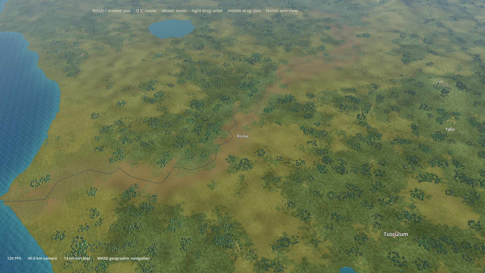

Roma / 278 BCE — settlement development
Working Roma-only vertical slice. Starts: Forum III, grain storage II, four empty slots. Original geometry, inherited CC0 materials. All images below are real Godot renders. Artistic parity with a modern commercial game is not claimed.
Implementation, audit, historical qualifications and limitations · Measured performance · Licenses · Real UI/renderer checks
Matched city view: prior Roma / starting configuration
Civic chain — three levels, identical camera
Only III is Roma’s starting classification. I/II are transient development previews, not literal historical construction phases.
Grain storage — three levels, identical camera
Starting level II is interpretive provisioning. Expanded footprints include storage, ventilation, loading ramps, threshing floors and working yards.
Strategic map — both chains at I / II / III
These are level comparisons, not starting configurations. Strategic map-symbol scale is exaggerated; close views retain metre scale. Background geography remains the previous prototype.
Prior Roma at the matched strategic camera

Before — strategicRTX 3060 Laptop measurements
600 settled wall intervals, one forced GPU draw per interval, hidden window/no swap, input locked, retained shader caches. Rendered comparison, not presented-frame FPS. All runs use 1920×1080. First-readiness intervals are reported separately; no clean-cache benchmark was performed.
| View | Avg FPS | 1% low | Worst settled ms | Worst readiness ms |
|---|
| city | 66.8 | 53.5 | 18.9 | 176.6 |
| civic-1 | 91.5 | 69.0 | 14.5 | 14.7 |
| civic-2 | 90.4 | 67.8 | 14.8 | 14.7 |
| civic-3 | 86.3 | 64.7 | 15.8 | 15.2 |
| grain-1 | 82.7 | 62.2 | 16.3 | 15.9 |
| grain-2 | 81.5 | 61.5 | 16.6 | 16.6 |
| grain-3 | 78.8 | 56.4 | 18.5 | 16.7 |
| strategic-1 | 120.0 | 91.2 | 11.8 | 29.9 |
| strategic-2 | 120.0 | 97.6 | 10.7 | 15.5 |
| strategic-3 | 120.0 | 96.3 | 10.6 | 12.4 |
Averages and low-frame tails are separate: all settled averages exceed 60 FPS; some recorded 1% lows remain below 60. Tests establish behavior and integrity, not artistic success.
Launch: .\godot-prototype\settlement-development.ps1. Add -Baseline for the previous showcase. No campaign state is persisted.